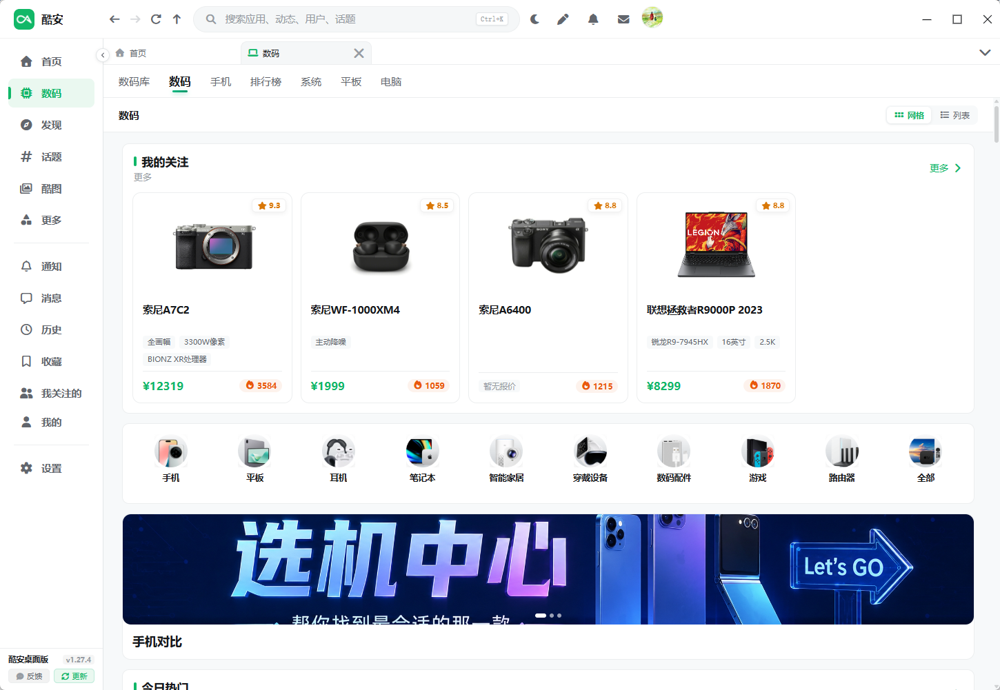
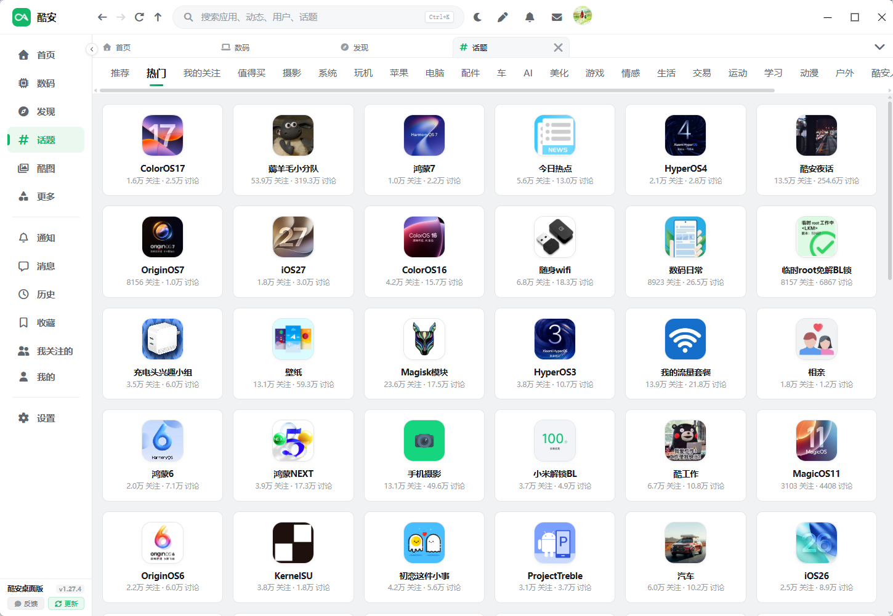
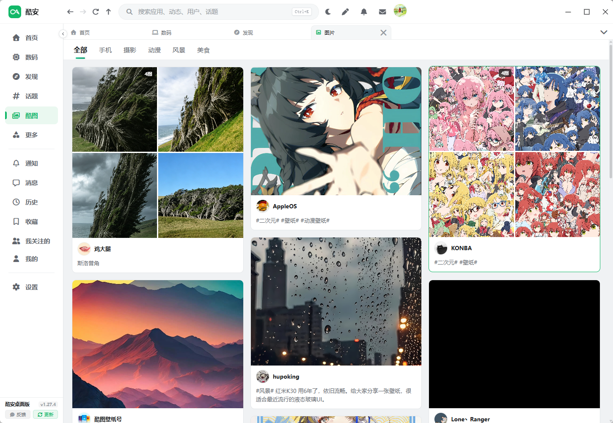
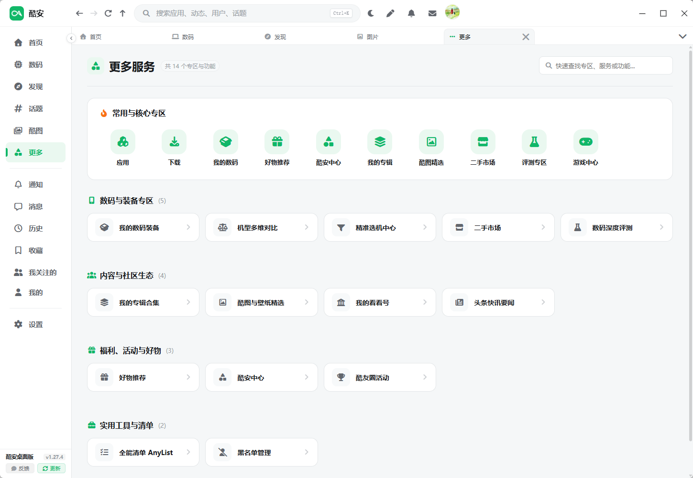
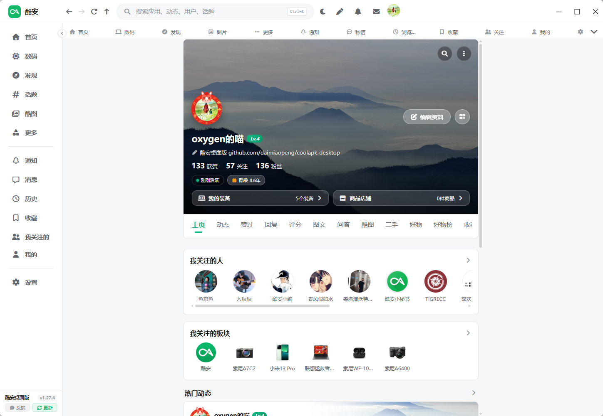
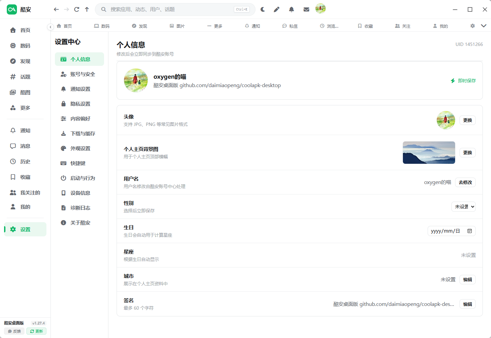

基于 Tauri 2、Vue 3 和 Rust 构建的现代非官方酷安桌面客户端。
告别模拟器卡顿与沉重内存占用，回归原生极致轻快、纯粹沉浸的大屏极客体验。
下一代原生微内核，极速秒开
内存安全并发后端，Token 签名认证
组合式现代化交互，全响应式体验
零广告、零第三方跟踪、零遥测收集
专为桌面体验量身适配，重塑每一处信息流呈现与社区交互逻辑。
涵盖推荐、热榜、头条快讯、酷图壁纸、数码选机、二手交易与深度评测，与移动端全量动态无缝同步。
实时聚合刷新优雅的楼中楼评论树排版、爆评优先高亮、点赞转发与收藏一气呵成；完美内置酷安原汁原味官方表情包。
酷安原生表情支持全屏无边距满幅平铺布局与多列响应式栅格，自由调节缩放，享受宽屏显示器下的高密度内容浏览快感。
大屏自适应内置支持官方 Web 授权扫码登录与 Cookie 导入两种登录模式，本地加密存储多账号凭据，无感一键快速切号。
多账户秒切全站级快捷综合搜索（支持 Ctrl+K 唤起），即时联想应用、游戏、用户、话题与图文；话题广场与分类一触即达。
Ctrl+K 瞬时搜索精细化时间轴浏览轨迹记录，支持动态、用户、话题与应用即时过滤筛选；常逛专区快速直达，收藏夹云端同步。
时间轴轨迹点击任意截图可查看高清原图，体验每一个页面的精巧细节。






支持 Windows、macOS、Linux 主流操作系统，并扩展提供移动端体验包。
包含桌面快捷方式与开始菜单，支持客户端内自动静默检测更新升级。
单可执行文件，无需写入注册表或安装，放在 U 盘或任意目录双击即开。
针对 Apple Silicon 原生 ARM64 架构编译，功耗更低，极速响应。
专为基于 Intel 处理器的 Mac 机型编译构建的 x64 原生应用安装镜像。
单文件即可执行，完美兼容几乎所有主流 Linux 发行版，赋予执行权限后直接启动。
专为 Ubuntu、Debian、Deepin (DEB) 及 Fedora、openSUSE (RPM) 提供的原生软件包。
基于 Tauri Mobile 构建的 Android 客户端，支持高刷流式加载。
提供未签名设备包，需使用 AltStore、SideStore、Sideloadly 或自签名证书安装。
恪守开源极客精神，尊重用户隐私，将数据控制权完整交还于您。
登录凭据与 Cookie 仅保存在本地 Tauri Stronghold 加密库中。客户端没有中央服务，绝不上传凭据至任何第三方开发者服务器。
每次客户端冷启动时会动态生成临时随机设备标识，不抓取用户主机的真实物理硬件指纹，极大程度保障设备私密性。
所有代码在 GitHub 完全公开且经过严格自动化类型与单元测试。每个安装包均由 GitHub Actions 官方纯净环境自动编译。
有疑问？这里汇总了用户最常咨询的使用要点。